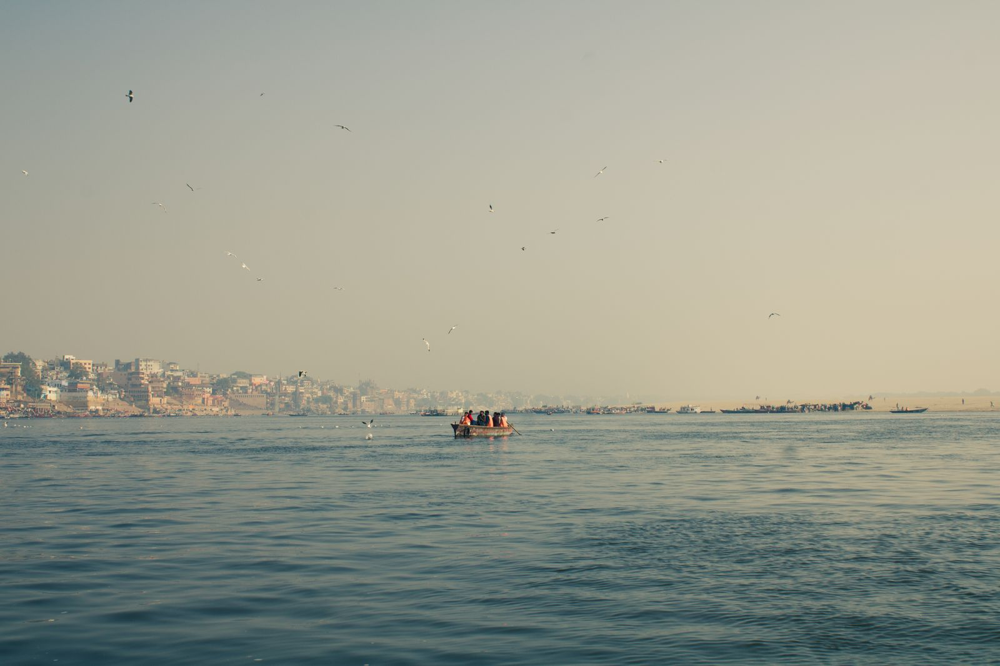

About the guide
Born above a brass shop. Still walking home.
My family's brass shop stood in Thatheri Bazaar for three generations, and I grew up above it, doing homework to the sound of hammers. The old city was not heritage to us. It was the way to school, the way to the river, the way to everything.
I read history at Banaras Hindu University because I wanted the documents to argue with the lanes — sometimes they agree, sometimes the lane wins, and a good guide should know both versions. I took my Uttar Pradesh Tourism guide licence in 2016 and have walked these five routes, in one form or another, ever since. The licence is in my pocket on every walk; ask to see it. Any guide who minds being asked is telling you something.
People ask why I never added a boat tour or a car circuit. Because a tirtha — a crossing place, the word this little practice is named for — is somewhere you arrive at slowly, on your own feet, or you haven't really arrived. A ghat seen from a boat is a postcard. A ghat reached down forty worn steps, past the flower sellers, is a place.
Two opinions I will not be talked out of. First: nobody should hurry a ghat at dawn. The first half hour of the day on the river is doing something older than tourism, and a guide who narrates over it is noise. Second: an audio-guide wand is a way of being alone in a crowd. Varanasi rewards questions — the weaver answers, the priest answers, the tea seller definitely answers. A recording never will.
Credentials & languages
Licensed guide, Uttar Pradesh Tourism (licensed 2016, renewed on cycle; card carried on every walk). First-aid trained, renewed 2025. Walks led in Hindi and English; I can also walk in Bengali — the city's Bengali widows' quarter taught me — if you book a week ahead. Member of the Varanasi guides' association; for school and festival groups I work with two fellow licensed guides whose names go in your confirmation, not just mine.
What I won't do
I won't take a group past the cap, take photographs at the cremation ghats, take you into a sanctum that isn't open to you, or take a commission from a shop. I won't run the lanes walk on Dev Deepawali day, when the old city is barricaded — the planner on the home page will refuse it and offer you the festival walk instead. And I won't promise a step-free Varanasi: this city is built of steps. What I will do is count them for your route, in writing, before you decide.

Walk with the person, not the recording.
Five walks, one index, prices printed. Start with the planner, or write to me directly.
Book a walk or write to hello@tirtha-walk.in